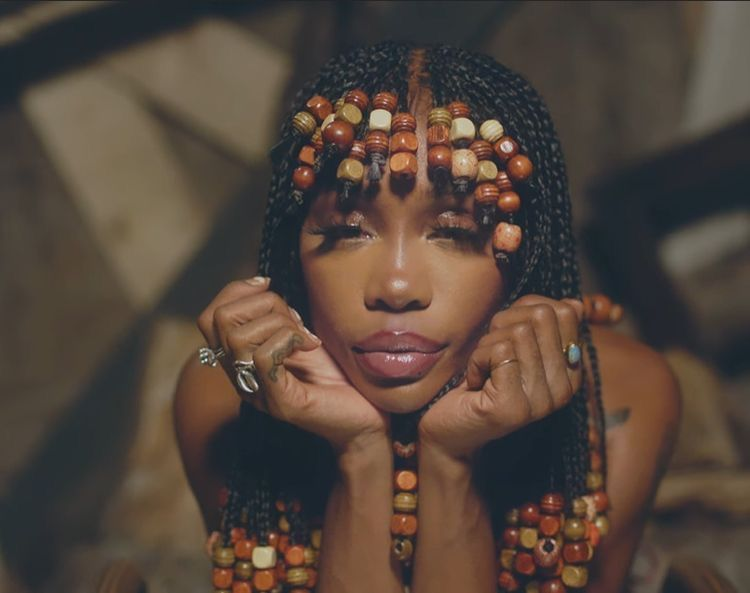

Hair Style

Where did the trend come from?
Hair is probably one of the oldest expressions of black culture. Natural hairstyles can be dated as far back as slavery in the Pre-colonial Era. During this time, hair was used to reflect one's identity. Specific hairstyles were represented by families and various tribes to show status as well as tradition. When the Transatlantic slave trade began, black hair began to be heavily scrutinized by white standards. Negative stererotypes like overall inferiority as well as comparison to animal hair and pubic hair (which is still perpetuated today). Later, in slavery, hairstyles like braids would be used to depict paths for runaways and store foods like rice between braids under the nose of slave owners. In the 50s and 60s, black hair styles were big parts of black liberation movements. For a while black women attempted to assimilate into white culture by using hot combs and chemical relaxers to straighten their hair. Since this effort wasn't working, and black people were still being heavily discriminated against, many of them began sporting an afro. Afros at the time were not just a style, but a symbol of rebellion and protest.
Who Popularized it?
White hairstyles were extremely hard to maintain as black hair is not same. As stated before, many black women and men would spend time straightening their hair to mimic white people. However, the beginning of the black power movement in the 60s allowed many black people to go back to their roots and create new innovative hairstyles. Some of these hairstyles include locs, braids, bantu knots, waves, crochet, and wigs.
What do Hoops look like today?
Black hair remains extremely policed by society, that's why it will never be "just hair". Many non-black individuals use the "just hair" argument to justify wearing black hairstyles and argue that black people should be more willing to share their culture. Not only is it disrespectful to wear black hairstyles as a non-black person, it can be extremely damaging to their hair. Many times, after (typically) white people wear braids or locs, they sometimes can get an allergic reaction to the added hair and tension alopecia. Both of these things can cause serious hair fall-out and permanent scalp damage. Though many black people still take pride in their hair, it's important to protect their hair as many people have experienced firing from their jobs and suspension/expulsion from school. Though it occasionally still happens these days, the US CROWN act (Creating a Respectful and Open World for Natural Hair) was put in place to protect black people from larger scaled discrimination.